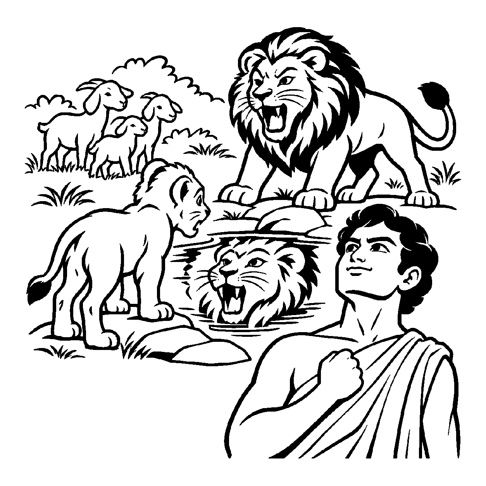

રાઈના દાણા જેવડું એક નાનું સરખું વડનું ટેટું હાથમાં લઈએ ત્યારે તેમાં કોઈ ડાળી, પાંદડું કે છાંયડો પ્રત્યક્ષ દેખાતા નથી; છતાં તેની ભીતરમાં એક એવો અદ્ભુત પ્રાણવાન વૈભવ છુપાયેલો છે જે ધરતીમાં રોપાતાં જ હજારો પશુ-પંખીઓને આશ્રય આપતો ગગનચુંબી વટવૃક્ષ બની શકે છે. તેવી જ રીતે જ્યારે વર્તમાનમાં અલ્પજ્ઞ કે સંસારી દેખાતા આત્મામાં સહજ જ્ઞાન, દર્શન, સુખ, વીર્ય અને પ્રભુત્વ સહિતની અનંત શક્તિઓ અખંડરૂપે બિરાજે છે તેવા ભીતરી અગાધ સામર્થ્યનું બોધન કરવામાં આવે, ત્યારે તે 'શક્તિબોધક પરમશુદ્ધ નિશ્ચયનય' કહેવાય છે.
આચાર્ય અમૃતચંદ્રદેવે સમયસારની આત્મખ્યાતિ ટીકામાં આત્માની સુડતાલીસ શક્તિઓનું અદ્ભુત વર્ણન કર્યું છે. આ નય સાધકને પોતાની વર્તમાન કમજોરીઓ કે અજ્ઞાન જોઈને નિરાશ થવા દેતો નથી. તે બતાવે છે કે તારી ભીતરમાં કેવળજ્ઞાન અને અનંતસુખ પ્રગટાવવાની પૂર્ણ શક્તિ અત્યારે પણ મોજૂદ છે; તું સ્વભાવથી પરમ વીર્યવાન ચૈતન્યદેવ છે.
આ નય સાધકને પરમ આધ્યાત્મિક સ્વાભિમાન આપે છે: હું કોઈ લાચાર કે પામર જીવ નથી; હું અનંત શક્તિઓનો શાશ્વત ધણી છું!
જ્ઞાન દર્શન વીર્યની, શક્તિ અનંત અપાર;
શક્તિબોધક નય ગ્રહે, આતમ વીર્ય ઉદાર.
હું અનંત આત્મવીર્ય અને જ્ઞાનશક્તિથી સંપન્ન પરમાત્મા છું એવા અચળ વિશ્વાસથી દીનતાનો ત્યાગ કરવો.

ધર્મક્ષેત્રમાં રહેતો એક યુવાન સાધક શ્રેણિક પોતાની નબળાઈઓથી એટલો ત્રાસી ગયો હતો કે તે દિવસ-રાત પોતાની જાતને ધિક્કારતો: "હું કેટલો નિર્માલ્ય અને અસમર્થ છું! મારાથી નાનો ઉપવાસ પણ થતો નથી, મને તરત ક્રોધ આવી જાય છે, મારામાં કોઈ સંયમની શક્તિ જ નથી! હું તો ભવોભવ સંસારમાં રખડવા માટે જ સર્જાયો છું." પોતાની જાતને સાવ શક્તિહીન અને કાયર માનીને તેણે મોક્ષમાર્ગનો પુરુષાર્થ જ છોડી દીધો. દીનતા અને લાચારીના કાદવમાં ખૂંપી ગયેલા શ્રેણિકના હૃદયમાંથી વિવશ પોકાર ઊઠ્યો: "આ નબળાઈ અને કાયરતામાંથી મને મુક્તિનું બળ ક્યાંથી મળશે?"
તે જ સમયે ત્યાં પધારેલા એક તેજસ્વી મુનિરાજે શ્રેણિકને પાસે બોલાવીને એક પ્રાચીન ઉપમા આપી: "શ્રેણિક, તું એ સિંહના બચ્ચા જેવો છે જે ભૂલથી બકરાંઓના ટોળામાં ઊછર્યો અને પોતાની જાતને બકરું માનીને 'બેં... બેં...' કરતો બીવા લાગ્યો! પણ જ્યારે એક વનરાજે તેને દર્પણ જેવા જળમાં તેનું મોઢું બતાવ્યું અને ગર્જના કરી, ત્યારે તે સિંહનું બચ્ચું સમજી ગયું કે હું બકરું નથી, હું તો જંગલનો રાજા સિંહ છું! શક્તિબોધક પરમશુદ્ધ નિશ્ચયનયને ઓળખ. તારી ભીતરમાં અનંત સિદ્ધો જેવી જ અનંત જ્ઞાન અને વીર્યની શક્તિઓ સુષુપ્ત પડી છે! તું નિર્બળ નથી, તું સ્વયં અનંત શક્તિઓનો સૂર્ય છે; જાગ અને તારા સિંહસ્વરૂપની ગર્જના કર!" મુનિશ્રીના આ પરમ શક્તિ-બોધનું પાન કરતાં જ શ્રેણિકના રોમેરોમમાં નવીન ચેતનાનો સંચાર થયો. તેની કાયરતા અને દીનતા પળવારમાં ભસ્મ થઈ ગઈ. તેણે અડગ આત્મબળ સાથે સંયમ અને તપનો માર્ગ અંગીકાર કર્યો.
જો આ નય કદાગ્રહ બને, તો મનુષ્ય કેવળ શક્તિની વાતો કરીને બેસી રહે છે અને તેને પ્રગટ કરવા માટે તપ-સંયમનો પુરુષાર્થ કરતો નથી. આવી એકાંત જડતાથી જીવ વર્તમાન વ્યવહારિક સાધના અને કર્તવ્યોની ઉપેક્ષા કરી બેસે છે અને ક્રમિક પરિણામોને સુધાર્યા વિના અકાળે પૂર્ણતાના મિથ્યા સંતોષમાં રાચે છે.
આ જ નય જ્યારે સમન્વયશીલ બને છે, ત્યારે તે સાધકને પોતાની સુષુપ્ત શક્તિઓનો ભરોસો આપીને તેને સાક્ષાત્ કેવળજ્ઞાનરૂપે પ્રગટ કરવાનો પ્રચંડ પુરુષાર્થ જગાવે છે.